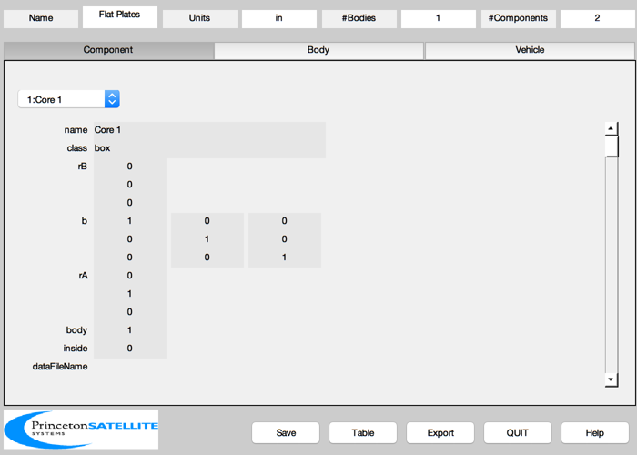
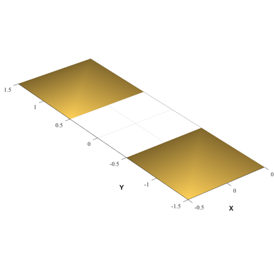

Simple model with two thin plates.
Create a CAD model with two thin boxes. This mimics the effect of two solar panels which often dominate the disturbances at higher altitudes. After the model is finished it is displayed. The 'FlatPlates' model is then saved to SCModels.
------------------------------------------------------------------------ See also BuildCADModel, CreateComponent, DrawSCPlugIn ------------------------------------------------------------------------
Contents
%-------------------------------------------------------------------------- % Copyright (c) 2000-2003, 2015 Princeton Satellite Systems, Inc. % All rights reserved. %--------------------------------------------------------------------------
CAD Model
Create a CAD model of the two plates for use in the disturbance analysis
% Initialize %----------- BuildCADModel( 'initialize' ); BuildCADModel( 'set name' , 'Flat Plates' ); BuildCADModel( 'set units', 'in' ); BuildCADModel( 'set reci', [7000;0;0] ); BuildCADModel( 'set qlvlh', [1;0;0;0] ); % Core %----- m = CreateBody('make','name','Core'); BuildCADModel('add body', m ); % This creates the connections between the bodies %------------------------------------------------ BuildCADModel( 'compute paths' ); % Core components %---------------- mass = struct; mass.mass = 1000; mass.inertia = [10 0 0;0 10 0;0 0 10]; mass.cM = [0;-0.5;0]; % Relative to the geometric center optical = struct; optical.sigmaT = 0; optical.sigmaA = 0; optical.sigmaD = 1; % Only diffuse reflection optical.sigmaS = 0 ; thermal = struct; thermal.temperature = 300; thermal.emissivity = 0.8; thermal.absorptivity = 0.4; m = CreateComponent( 'make', 'box', 'x', 1, 'y', 1, 'z', 1e-20, 'rA',[0;1;0],... 'name', 'Core 1', 'body', 1, 'mass', mass, ... 'faceColor', 'gold foil', 'emissivity', thermal.emissivity,... 'absorptivity', thermal.absorptivity, 'sigmaT', optical.sigmaT,... 'sigmaA', optical.sigmaA, 'sigmaD', optical.sigmaD, 'sigmaS', optical.sigmaS,... 'inside', 0); BuildCADModel( 'add component', m ); mass.cM = [0;0.5;0]; % Relative to the geometric center m = CreateComponent( 'make', 'box', 'x', 1, 'y', 1, 'z', 1e-20, 'rA',[0;-1;0],... 'name', 'Core 2', 'body', 1, 'mass', mass, ... 'faceColor', 'gold foil', 'emissivity', thermal.emissivity,... 'absorptivity', thermal.absorptivity, 'sigmaT', optical.sigmaT,... 'sigmaA', optical.sigmaA, 'sigmaD', optical.sigmaD, 'sigmaS', optical.sigmaS,... 'inside', 0); BuildCADModel( 'add component', m ); g = BuildCADModel('get cad model'); BuildCADModel('show spacecraft') 
Save the model to a mat-file for future use
%--------------------------------------------- dName = FindDirectory('SCModels'); if( isempty( dName ) ), dName = []; end SaveStructure( g, fullfile(dName,'FlatPlates') ) %--------------------------------------